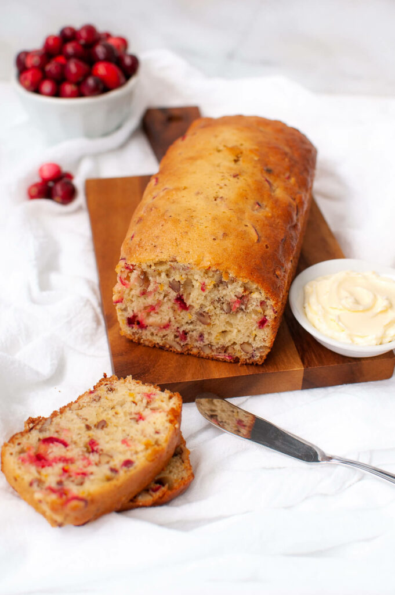

Cranberry Bread

Prep time: 10 mins
Cook time: 50 mins
Servings: 10
Level: easy
Flour: This cranberry walnut bread starts with two cups of all-purpose flour.
Sugar: A little less than a cup of white sugar (¾ cup, to be exact) gives you all the sweetness you need.
Leaveners: Baking soda and baking powder act as leaveners, which means they help the bread rise.
Salt: A pinch of salt brings out the other flavors in this cranberry walnut bread.
Cranberries: Fresh cranberries are best, but you can use dried cranberries in a pinch.
Nuts: This recipe calls for walnuts, but you could substitute pecans if you like.
Orange: You'll need the juice and the zest.
Egg: An egg helps bind the quick bread batter together and adds moisture.
Oil: A neutral oil, like vegetable oil, provides moisture without adding flavor.
- Mix the dry ingredients: Combine flour, sugar, baking powder, salt, and baking soda in a mixing bowl. Add walnuts and stir.
- Mix the wet ingredients: Mix the juice, egg, oil, and zest together in a bowl. Stir the dry mix into the wet mix, then add the cranberries.
- Bake the bread: Transfer the batter to a prepared loaf pan and bake in a preheated oven until a toothpick inserted into the center comes out clean.
Home